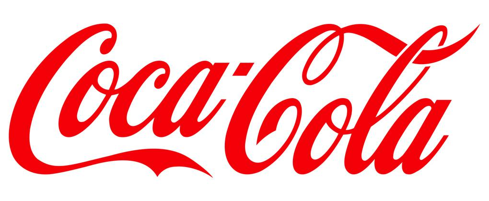
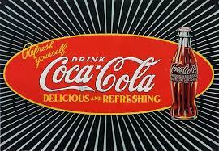
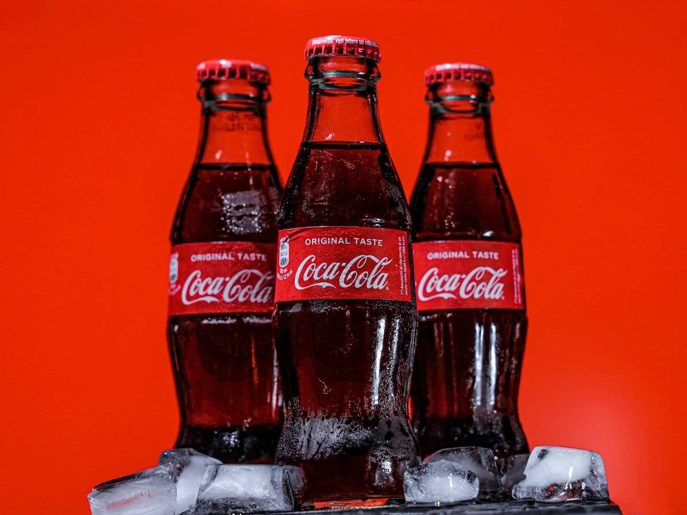

Podjetje Coca-Cola je eden največjih proizvajalcev in distributerjev brezalkoholnih pijač in koncentratov sirupov na svetu.
Najbolj poznana je po imenu izvirnega izdelka Coca-Cola.
Farmacevt John Stith Pemberton je leta 1884 izumil vino iz koke, imenovano Pemberton's French Wine Coca. Navdihnil ga je izjemen uspeh vina iz koke s Corsa Angelo Mariani, znanega kot Vino Mariani. Naslednje leto, ko sta Atlanta in okrožje Fulton (Georgia) uvedla zakone o prepovedi, je Pemberton začel razvijati brezalkoholno različico francoske vinske koke, dodal ji je sadne arome, sladkor in citronsko kislino, s čimer je ohranil vsebnost kokaina, ki je bila takrat verjamejo, da imajo čudežne blagodejne učinke. Ime Coca-Cola si je zamislil Pembertonov partner, Frank Mason Robinson, iz kombinacije dveh glavnih sestavin: stimulativnih listov koke iz Južne Amerike in aromatičnih kola orehov, virov kofeina. Pemberton je pijačo prvič oglaševal 29. maja 1884 v lokalnem časopisu in navedel, da je njegova pijača zdravilo, ki lahko zdravi migrene in lajša utrujenost. Leta 1887 je Pemberton prodal pravice do svojega podjetja Asi Griggsu Candlerju, ki ga je leta 1888 vključil v korporacijo Coca-Cola. Istega leta je Pemberton drugič prodal pravice trem drugim poslovnežem: J.C. Mayfield, A.O. Murphey in E.H. Bloodworth. Medtem je Pembertonov alkoholik sin Charley Pemberton prav tako začel prodajati svojo različico izdelka. Tako so bile na trgu hkrati tri različice Coca-Cole, ki so jih prodajala tri različna podjetja. 16. avgusta istega leta je Pemberton umrl. Leta 1899 je Candler za 1 dolar prodal ekskluzivne pravice za polnjenje Coca-Cole v večini Združenih držav trem podjetnikom iz Chattanooge v Tennesseeju: Benjaminu F. Thomasu, Josephu B. Whiteheadu in Johnu T. Luptonu, ki so ustanovili Coca-Colo. Polnilnica Cola. Z uveljavitvijo zakona o čisti hrani in zdravilih leta 1906 je bila raven kokaina znižana in nato izločena iz proizvodnega procesa. Leta 1919 je Candler prodal svoje podjetje bankirju iz Atlante Ernestu Woodruffu.

| Razni izdelki Coca-Cole: |
|---|
| Coca-Cola Light |
| Diet Coca-Cola Caffeine-Free |
| Coca-Cola Cherry |
| Diet Cherry Coca-Cola |
| Coca-Cola Lemon |
| Diet Coca-Cola Lemon |
| Coca-Cola Lime |
| Diet Coca-Cola Lime |
| Coca-Cola Vanilla |
| Diet Vanilla Coca-Cola |
| Coca-Cola Black Cherry Vanilla |
| Diet Coca-Cola Black Cherry Vanilla |
| Coca-Cola C2 |
| Diet Coca-Cola Sweetened with Splenda |
| Coca-Cola Zero |
| Coca-Cola Blāk |
| Diet Coca-Cola Plus |
| Coca-Cola Orange |
| Coca-Cola Life |
